Barra · bean stock reference board
Actual production screenshots. Each component compares different products; outlined winner supplies the structure. Both sources inform one existing-brand implementation. Screenshots are research evidence, not a proposed Deriva interface.
Existing Deriva warm ledger, Cormorant Garamond/Poppins/IBM Plex Mono, warm canvas, hairline rules and brown actions. No imported palette.
Scores: job / context / state / clarity / accessibility / brand, each 1–5. Accessibility is visual suitability only.
Header and navigation
Shopify · Mobbin · WINNER
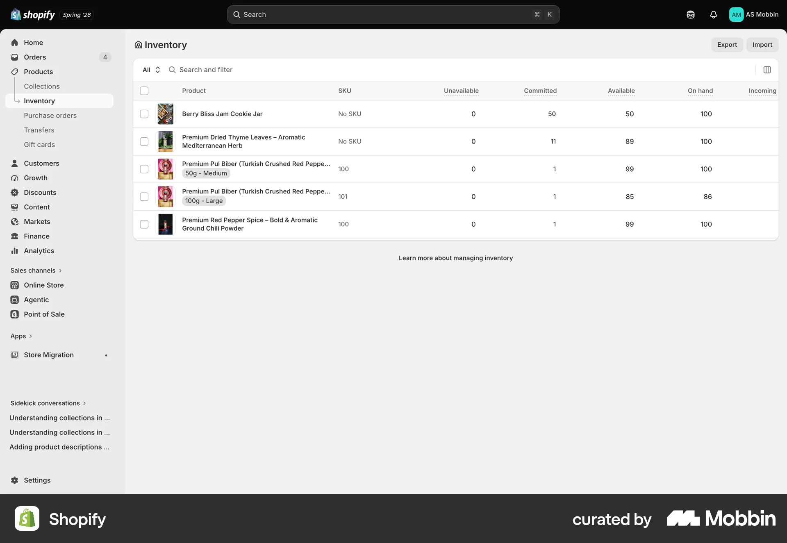
[5, 5, 4, 5, 4, 4]Canonical sourceSquare · Refero · alternative
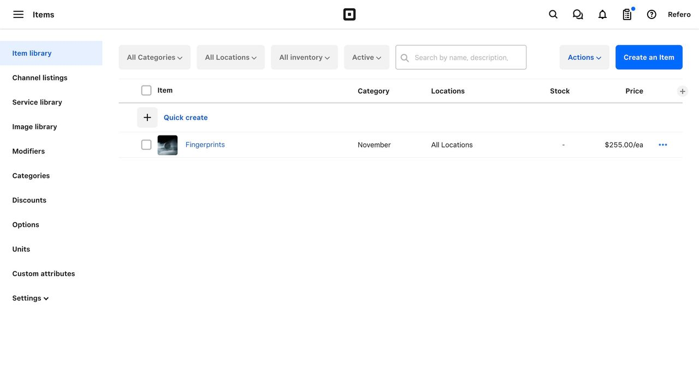
[5, 4, 4, 4, 4, 4]Canonical sourceAdopt: Keep title → primary work tabs → one compact search/filter bar. Productos | Granos is the top-level work switch; existing product filters remain nested.
Reject / adapt: Reject Shopify five inventory measures and Square multi-location/category clutter.
Bean row and quantities
Square · Mobbin · WINNER
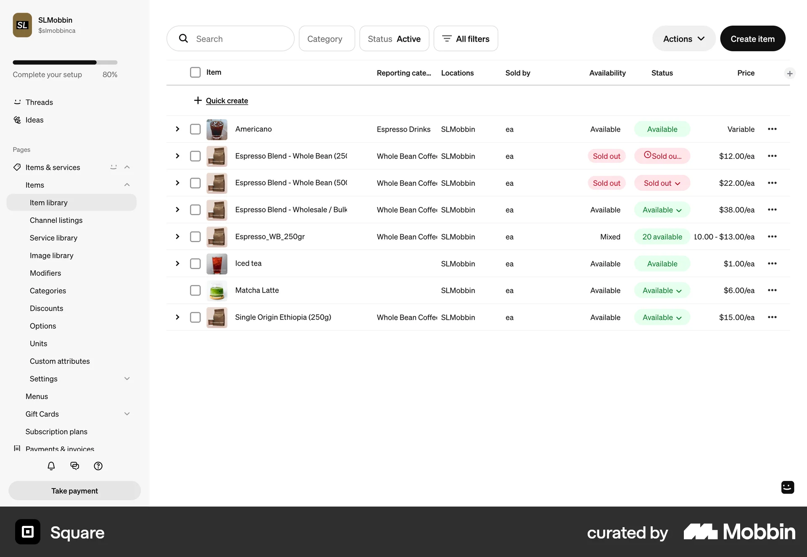
[5, 5, 5, 5, 4, 4]Canonical sourceMangomint · Refero · alternative
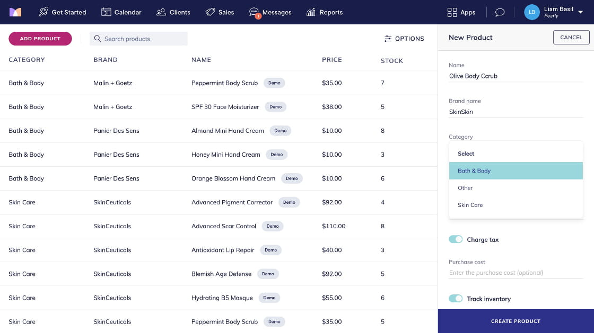
[5, 4, 4, 4, 4, 4]Canonical sourceAdopt: Separate bean identity, textual status and numeric quantity. Show Sin contar for null, 0 kg for zero, fractional kg otherwise. Premium is secondary text. Dense rows open the existing detail panel.
Reject / adapt: Reject colored marketing/status badges, product photos and extra retail columns.
Exact kilogram adjustment
Shopify · Mobbin · WINNER
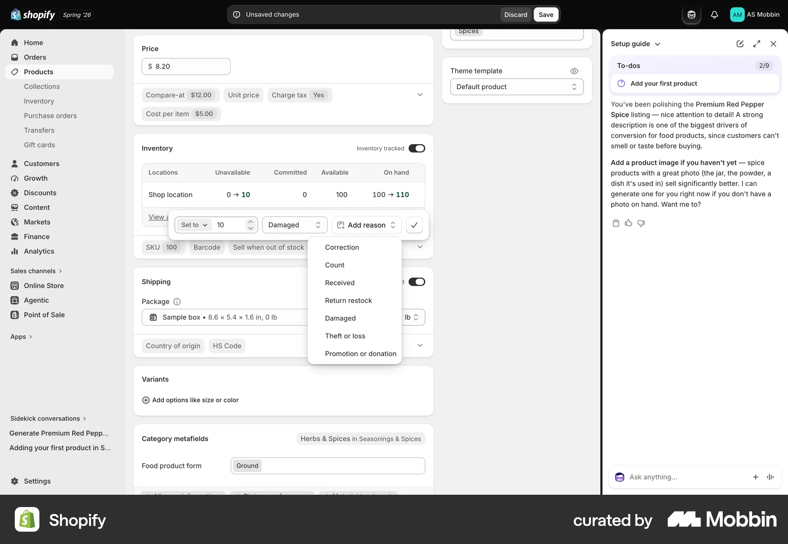
[5, 5, 5, 5, 4, 4]Canonical sourceMangomint · Refero · alternative
[5, 4, 4, 4, 4, 4]Canonical sourceAdopt: Place existing amount → resulting amount beside the control. Explicit Contar / Agregar / Retirar modes, one kg input, note and anchored save. Unknown permits only first count; retain three decimal precision and prevent negative result.
Reject / adapt: Reject variant matrices, creation fields and unrelated retail reasons; use existing side panel sizing.
Manager Carta menu associations
Shopify · Refero · WINNER
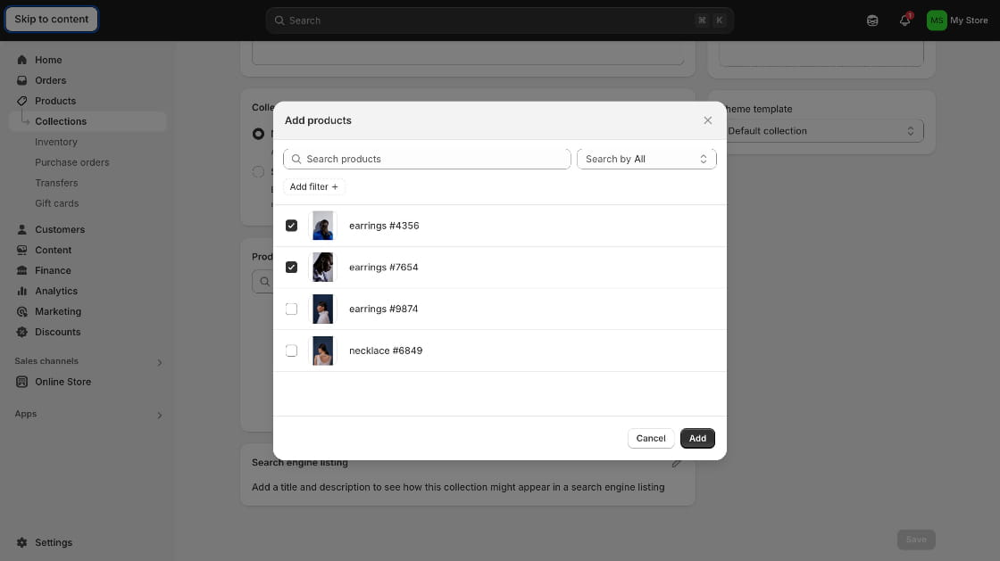
[5, 5, 5, 5, 4, 4]Canonical sourceTeachable · Mobbin · alternative
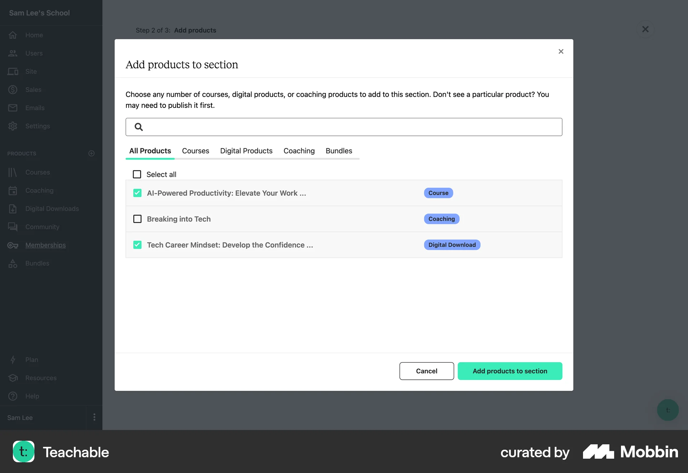
[4, 4, 4, 4, 4, 3]Canonical sourceAdopt: In the bean detail Carta tab, search before an explicit checkbox result list. Keep selection summary and save/cancel footer. Staff sees read-only connected items. No bean creation form.
Reject / adapt: Reject select-all and product-type tabs; make current links and unapplied changes explicit.
History and audit
Square · Mobbin · WINNER
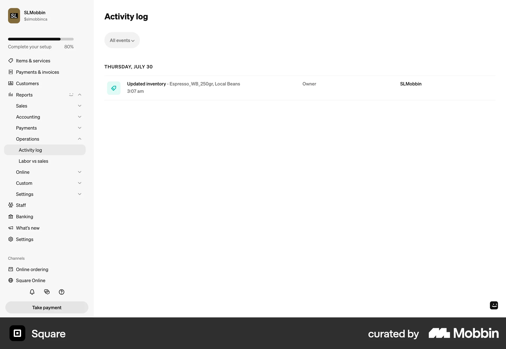
[5, 5, 4, 5, 4, 4]Canonical sourceFibery · Refero · alternative
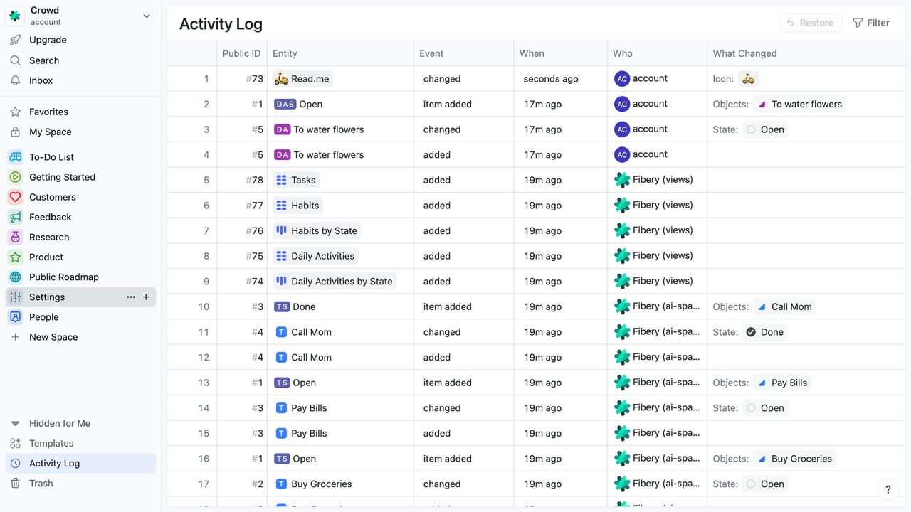
[4, 4, 5, 4, 3, 4]Canonical sourceAdopt: Group events by day; put action and before → after first, then actor, timestamp and note. Keep compact rows on desktop, stacked records on mobile.
Reject / adapt: Reject Fibery six-column layout on mobile and irrelevant entity identifiers.
Empty and no-results states
Fresha · Refero · WINNER
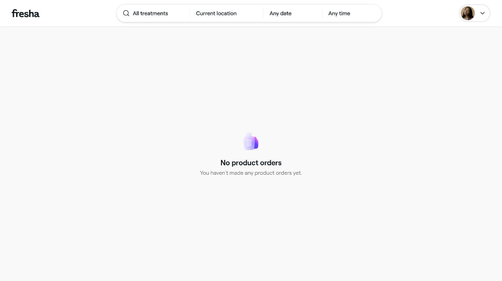
[5, 5, 4, 5, 4, 4]Canonical sourceDeel · Mobbin · alternative
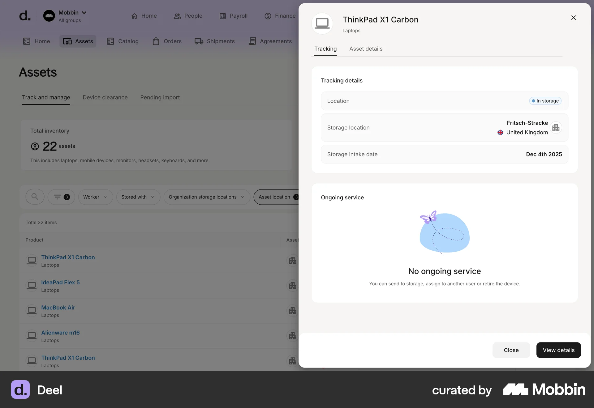
[4, 4, 4, 4, 4, 3]Canonical sourceAdopt: Use compact title and one useful next action inside the existing panel. Distinguish no search results, no history and valid empty 200. Unknown counts are nine populated rows, never empty.
Reject / adapt: Reject decorative illustrations and create-product CTA because seeds are backend-owned.
Loading states
Fal · Refero · WINNER
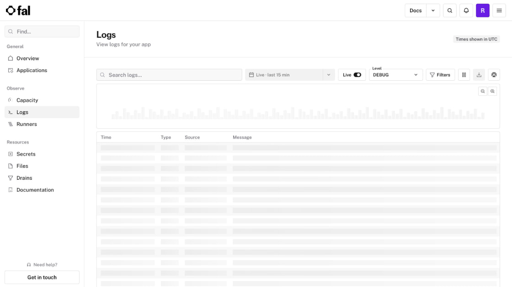
[4, 5, 5, 5, 4, 4]Canonical sourceMercury · Refero · alternative
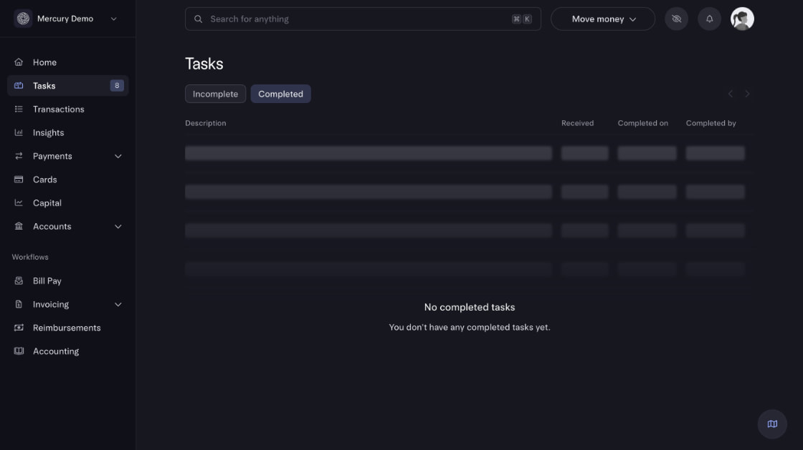
[4, 4, 5, 4, 4, 3]Canonical sourceAdopt: Keep title, navigation and column locations visible while skeleton rows fill the future list slots. Use a text loading status and avoid 0 kg placeholders.
Reject / adapt: Reject dark theme, marketing footer and indefinite animation; respect reduced motion.
Conflict, uncertain save, authentication and missing backend
Typeform · Mobbin · WINNER
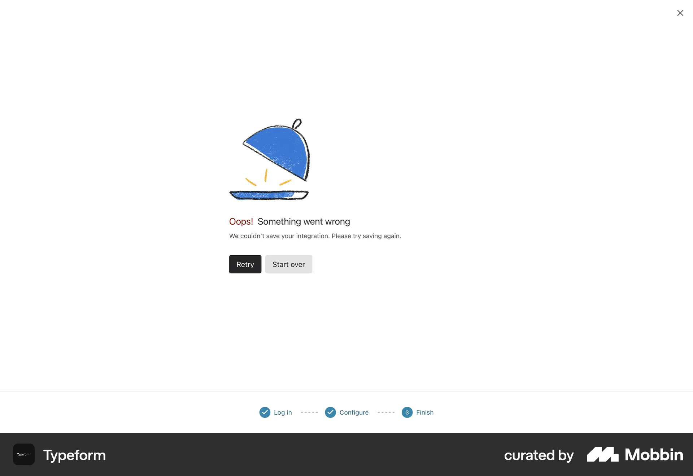
[5, 4, 4, 5, 4, 4]Canonical sourceLoom · Refero · alternative
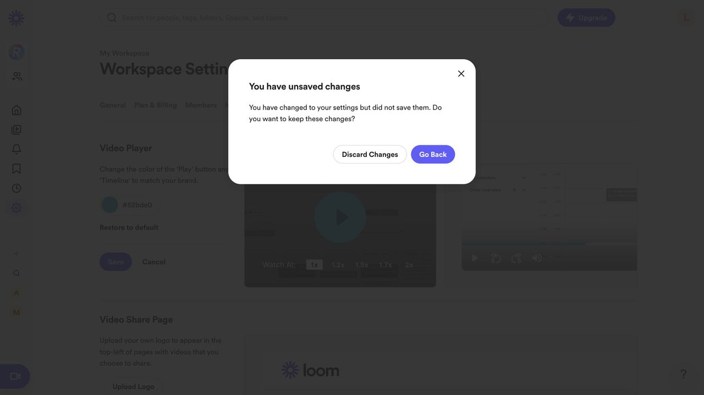
[4, 5, 4, 5, 4, 4]Canonical sourceAdopt: Keep explicit error title, explanation and one recovery action with secondary return. Preserve draft. Unknown outcome: Guardado por confirmar and retry same UUID. 409: show refreshed stock and require review. 401: sign in then restore only same-account draft. 404: Granos todavía no está habilitado, distinct from empty 200.
Reject / adapt: Reject Start over as primary recovery and failed-save certainty after network loss. Source screenshots show generic save failure and unsaved warning, not the actual domain-specific 409/404 handling.
Share complete bean inventory
Runway · Refero · WINNER
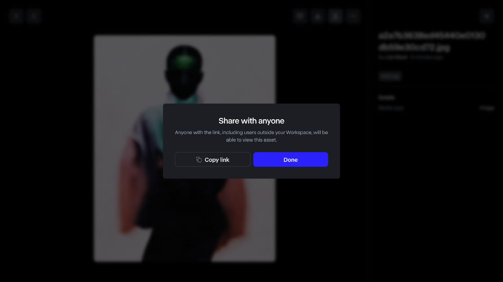
[4, 5, 4, 5, 4, 4]Canonical sourceBonsai · Mobbin · alternative
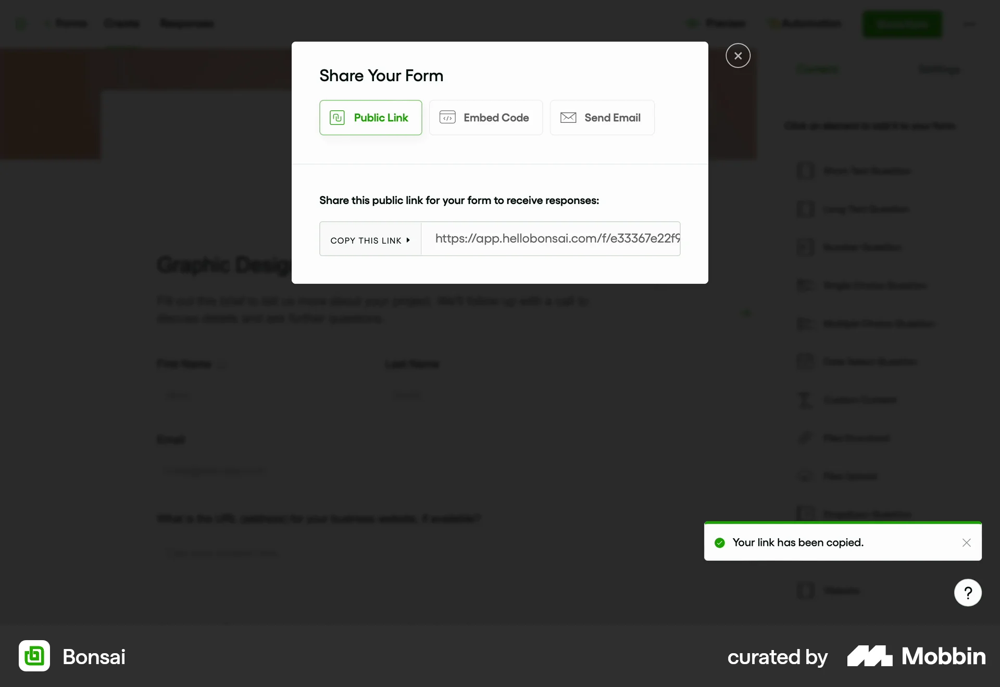
[4, 4, 4, 4, 4, 4]Canonical sourceAdopt: Use focused title Compartir granos, readable full nine-bean stock preview and explicit copy/WhatsApp actions in the existing StockShare dialog. Include timestamp, premium marker and Sin contar; export complete inventory regardless of search/filter.
Reject / adapt: Reject public-link permissions, social platform grids and URL-only preview. Existing StockShare text sharing is the domain adaptation.
Limitations: static screenshots do not establish keyboard behavior, validation rules, screen reader support or network semantics. 409/401/404/request-id behavior follows the backend contract and current app recovery policy. All screens downloaded from supplied source image URLs.